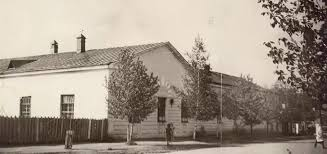
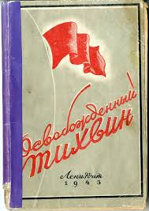
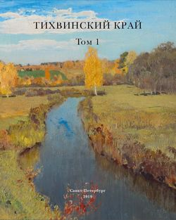
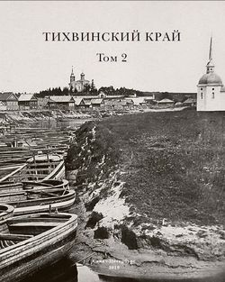

Летопись родного края
Здесь можно углубиться в историю города Тихвина и прочитать интересные издания про наш город.
Приятного вам времяпровождения!

История Тихвинского хлебокомбината периода ВОВ, основанная на архивных документах архивного отдела администрации МО Тихвинский муниципальный район.
Скачать статью

Освобождённый Тихвин. Издание 1943 года.
Скачать книгу

Тихвинский край: Том 1. — СПб., 2019. — Т. 1. — 244 с. Редакционная коллегия: Н. Л. Белова, Е. Б. Большаков, Ф. Д. Коньков, Л. В. Королькова, Н. П. Феофанова, И. В. Фомин (председатель).
Скачать книгу
